Nachdem das Dokument mittels Button "Beleg Pro" im Menüpunkt "neuer Archiveintrag" eingegangen ist, öffnet sich der "Beleg Pro - Wizard", welcher anhand verschiedener Schritte durch den Vorgang begleitet.
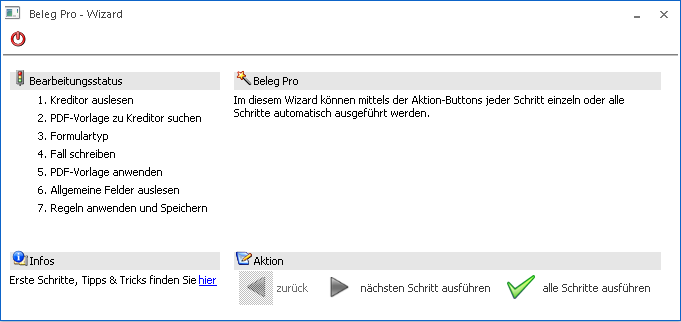
Buttons
Ø Ende
Mithilfe dieses Buttons kann der Wizard geschlossen werden, wenn sich der Wizard bereits im Schritt 4 befunden hat und ein Fall geschrieben wurde, kann der Wizard nochmals in der Fallansicht der Falls geöffnet werden. Andernfalls muss ein neuer Eingang angestoßen werden.
Ø Zurück
Mit diesem Button kann der Wizard nochmals um einen Schritt zurückgesetzt werden, um eventuell doch andere Eingaben zu tätigen.
Ø nächsten Schritt ausführen
Wenn dieser Button angewählt wird, wird innerhalb des Wizard der nächste Schritt ausgeführt
Ø alle Schritte ausführen
Es werden direkt alle Wizard-Schritte ausgeführt, ohne dass man zwischendurch manuelle Eingaben durchführen kann.
Hinweis
Wenn nach Anwahl des Buttons "alle Schritte ausführen" anhand der WinLine Logik kein Kreditor gefunden wurde, bleibt der Wizard nochmals im Schritt "1. Kreditor auslesen" stehen, damit manuell ein Kreditor ausgewählt bzw. neu angelegt werden kann. Anschließend kann wieder der Button "nächster Schritt ausführen" oder "alle Schritte ausführen" angewählt werden, um mit dem Eingang fortzufahren.
Im Bereich "Infos" finden Sie im Text "Erste Schritte, Tipps & Tricks finden Sie hier" einen Link im Wort "hier", welcher unsere Internetseite zum Modul "Beleg PRO" mit nützlichen Infos & Videos öffnet.
1. Kreditor auslesen
Im ersten Schritt des Wizard, wird versucht der Kreditor aus dem Beleg auszulesen, welcher anhand drei verschiedener Stufen (Logiken) gesucht wird.
Ø 1 Stufe
Es wird im gesamten Dokument eine UID-Nummer, IBAN-Nummer, Homepage oder Mailadresse gesucht und mit den angelegten Personenkonten abgeglichen.
Ø 2 Stufe
Falls innerhalb der ersten Stufe kein eindeutiger Kreditor gefunden wurde, wird in der zweiten Stufe nochmals nach UID-Nummer, IBAN-Nummer, Homepage oder Mailadresse gesucht, nur diesmal wird im Hintergrund der Kopf- und Fußbereich vergrößert und der Kontrast erhöht. Das anschließende Ergebnis wird wieder mit dem Personenkonten abgeglichen.
Ø 3 Stufe
Wenn in den beiden vorherigen Stufen nichts gefunden wurde, wird anhand der gefundenen Wörter verglichen, ob ein Personenkonto mit der Kombination von Ort + Straße, PLZ + Straße bzw. nur Straße, Ort oder PLZ angelegt ist. Wenn hier nichts gefunden wurde, bleibt der Wizard im Schritt "1 Kreditor auslesen" stehen und zeigt den Text "Kein Kreditor gefunden" an.
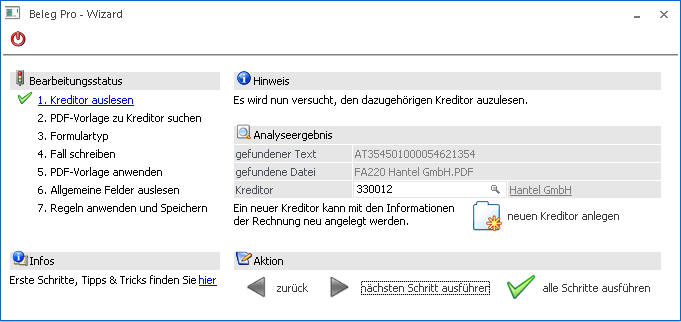
Wenn ein Kreditor gefunden wurde, wird angezeigt, in welchen analysierten Text das Schlüsselwort gefunden wurde bzw. wird der Kreditor direkt in das Eingabefeld mit der Kreditorennummer übernommen. Im Eingabefeld "Kreditor" kann anschließend noch manuell ein anderer Kreditor mittels Eingabe, Autovervollständigung oder Matchcode ausgewählt werden.
Falls kein Kreditor gefunden wurde, ist dies an einem Hinweistext "Kein Kreditor gefunden" im unteren Bereich des Wizard ersichtlich.
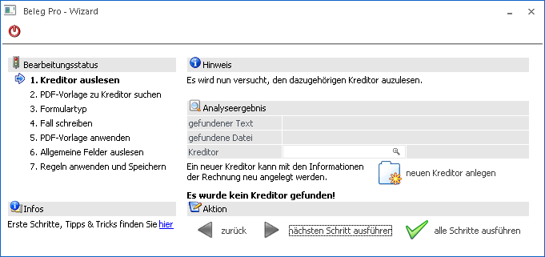
Hier kann ebenfalls wieder ein Kreditor manuell eingetragen werden, oder mithilfe des Buttons "neuen Kreditor anlegen" automatisch ein neuer Kreditor mit den gefundenen Informationen angelegt werden:
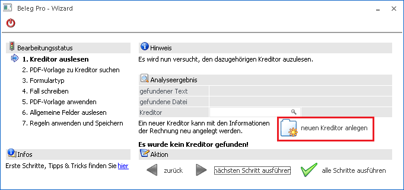
Es wird der erste Kreditor im Personenkontenstamm gesucht und bei diesem der Nummernkreis hochgezählt, anschließend öffnet sich automatisch der Personenkontenstamm mit den eingetragenen Informationen. Es werden folgende Felder automatisch befüllt, falls diese aus dem Beleg ausgelesen werden konnten:
ü Straße
ü Land
ü Ort
ü PLZ
ü E-Mail-Adresse
ü WWW-Adresse
ü IBAN
ü UIDNr
Diese Werte werden in blau markiert dargestellt.
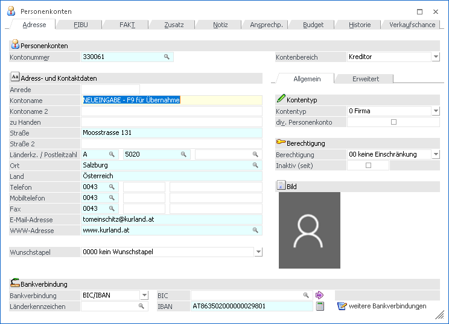
Anschließend muss nur noch ein Kontonamen vergeben werden und der Datensatz mittels "OK" gespeichert werden. Nachdem das Personenkonto gespeichert wurde, wird automatisch zurück in den Wizard gesprungen und der gerade angelegte Kreditor übernommen.
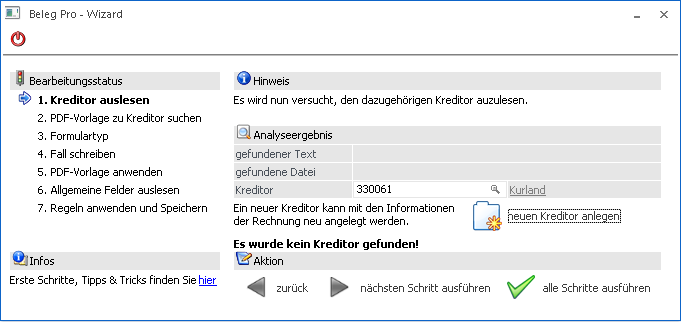
Nachdem ein Kreditor eingetragen wurde, kann in den nächsten Schritt des Wizards gewechselt werden oder wieder direkt alle Schritte ausgeführt werden.
2. PDF-Vorlage zu Kreditor suchen
Im zweiten Schritt des Wizard wird analysiert, ob es für den gewählten Kreditor bereits eine angelegt Beleg Pro Vorlage gibt. Da es für die Erstellung von FAKT-Belegen notwendig ist, eine Vorlage angelegt zu haben, damit die Artikelnummern, Menge bzw. Einzelpreis maskiert werden, sollte in diesem Schritt die Vorlage im Feld "Vorlage" angezeigt werden.
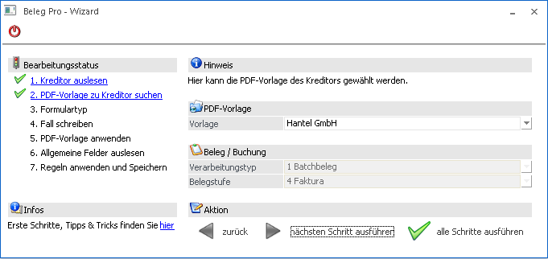
Ø Vorlage
Wenn die Vorlage gefunden wurde, wird diese im Feld "Vorlage" angezeigt. Wenn es mehrere Vorlagen zu einem Kreditor geben sollte, können diese im Drop-Down ausgewählt werden.
Ø Verarbeitungstyp
Wenn eine Vorlage gewählt wurde, wird der Verarbeitungstyp aus der Beleg Pro Vorlagendefinition ausgelesen und kann nicht manuell geändert werden.
Ø Belegstufe
Wenn eine Vorlage gewählt wurde, wird Belegstufe aus der Beleg Pro Vorlagendefinition ausgelesen und kann nicht manuell geändert werden.
3. Formulartyp
Im Schritt "3 Formulartyp" des Wizard kann ein angelegter Formurtyp mit der Kategorie "3 Belegeingang Belege" ausgewählt werden.
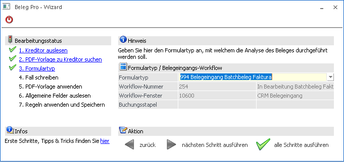
Ø Formulartyp
In diesem Eingabefeld kann ein angelegter Formulartyp ausgewählt werden.
Der Formulartyp steuert, welcher CRM-Fall geschrieben wird bzw. in welchen abweichenden Buchungsstapel der erzeugte Buchungssatz wandern soll.
Weitere Informationen dazu werden im Handbuch WinLine ADMIN im Kapitel "Formulartypen" dargestellt.
4. Fall schreiben
In diesem Schritt des Wizard wird im Hintergrund automatisch der CRM-Fall geschrieben.
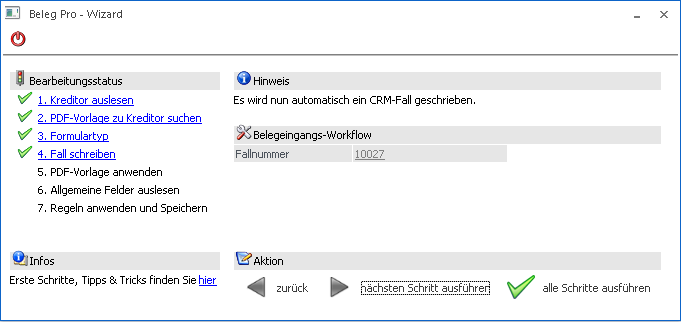
Nachdem der CRM-Fall erfolgreich geschrieben wurde, ist die Fallnummer als Information ersichtlich. Beim Klick auf die Fallnummer, wird der eben geschriebene Fall in der Fallansicht geöffnet.
5. PDF-Vorlage anwenden
In diesem Schritt wird die Maskierung bzw. Definition der Beleg Pro Vorlage ausgelesen und die gefundenen Werte in die Tabelle des Fensters "Beleg Pro - Import" als Belegvariablen übernommen.
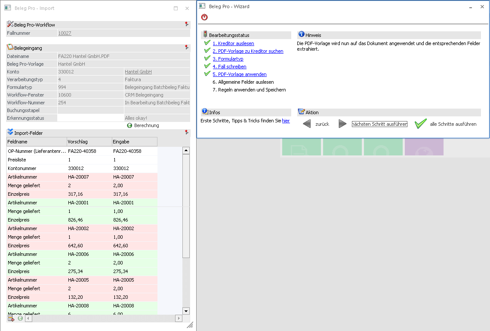
In der Vorschau des Dokuments ist anhand der blauen Vierecke ersichtlich, wo die Werte lt. Beleg Pro Vorlage definiert und ausgelesen wurde.
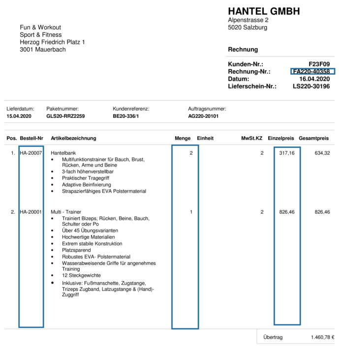
Nähere Informationen können dem Kapitel Beleg Pro - Vorlagen entnommen werden.
6. Allgemeine Felder auslesen
Bei der Erstellung von FAKT-Belegen (Verarbeitungstyp "1 Batchbeleg") werden in diesem Schritt des Wizards keine Felder ausgelesen, da sich die Felder wie Anschrift und Betrag aus der Eingangsrechnung selbst ergibt.
7. Regeln anwenden und Speichern
Im letzten Schritt des Wizard werden eventuell vorhandene/angelegte globale Regeln bzw. Regeln aus der Beleg Pro Vorlage ausgelesen bzw. werden die gefundenen Artikelnummern mit Lieferantenspezifischen Artikelnummern von Preiseinträgen verglichen und diese übernommen.
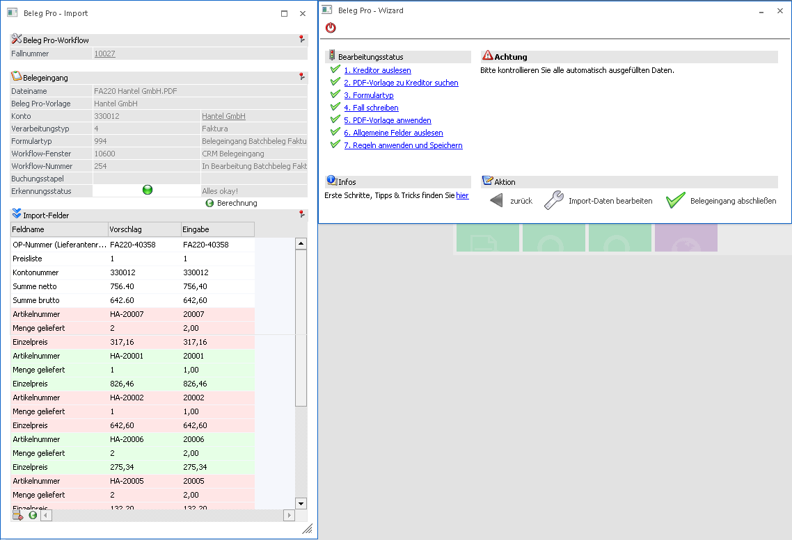
Wenn die gefundene Artikelnummer in einem Preiseintrag im Feld "Lief.Art.Nr." gefunden wird, wird die tatsächliche im System verwendete Artikelnummer herangezogen.
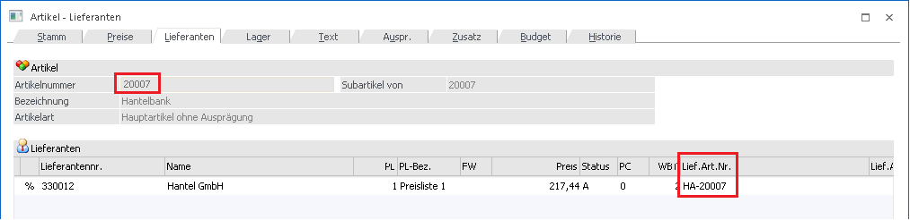
So wurde in diesem Beispiel automatisch die gefundene Artikelnummer "HA-20007" mit der Artikelnummer "20007" ersetzt.
Buttons
Ø Import-Daten bearbeiten
Wenn der Button "Import-Daten bearbeiten" angewählt wird, wird der Wizard geschlossen, jedoch bleibt das Fenster "Beleg Pro - Import" noch geöffnet, um eventuell die Werte noch anzupassen/erweitern.
Ø Belegeingang abschließen
Mit dem Button "Belegeingang abschließen" können die Werte in der Tabelle übernommen, der Menüpunkt geschlossen und zu einem späteren Zeitpunkt ergänzt bzw. die Buchung übergeben werden.
Die weiteren Schritte werden im Kapitel Beleg Pro - Import dargestellt.
Tabellen-Buttons
Ø Zeile entfernen
Entfernt die im Fokus stehende Zeile innerhalb der Tabelle. Wenn es sich dabei um eine Block-Zeile handelt, wird der gesamte Block entfernt.
Ø Block hinzufügen
Bei Anwahl dieses Buttons wird entweder ein Buchungsblock mit den Variablen "Konto-Soll", "Betrag", "Steuerzeile" und "Steuerbetrag" oder – bei Beleg Pro Batchbeleg Eingängen – die Variablen "Artikelnummer", "Einzelpreis" und "Menge geliefert" hinzu.
Ø Preis bearbeiten
Diese Funktion ist nur bei Batchbeleg Beleg Pro Eingängen aktiv geschalten und wenn der Fokus auf der Variable "Einzelpreis" eines Artikel-Blocks steht. Wenn dieser Button anschließend angewählt wird, wird mit dem Kontext der Artikelnummer der Artikelstamm geöffnet und der Preiseintrag als Vorschlag in die Preistabelle geschrieben.
Ø Block-Zeile hinzufügen
Wenn der Fokus innerhalb einer Blockzeile (rot, grün gefärbt) steht, kann mithilfe dieses Buttons eine Variable/Feld zu diesem Block eingefügt werden. Diese eingefügte Zeile hat anschließend die Verbindung zum Block, daher wird dies auch bei der Übergabe an den Buchungsstapel berücksichtigt und für die einzelnen Block (Splitzeile) berücksichtigt. (z.B. eine Kostenart und Kostenstelle zu einem Buchungsblock hinzufügen)